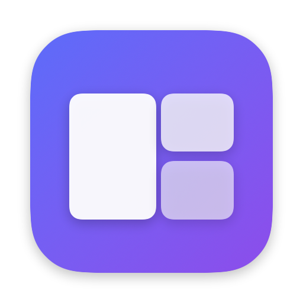
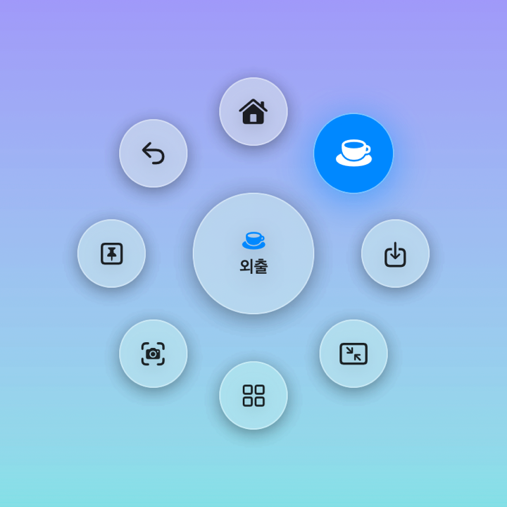
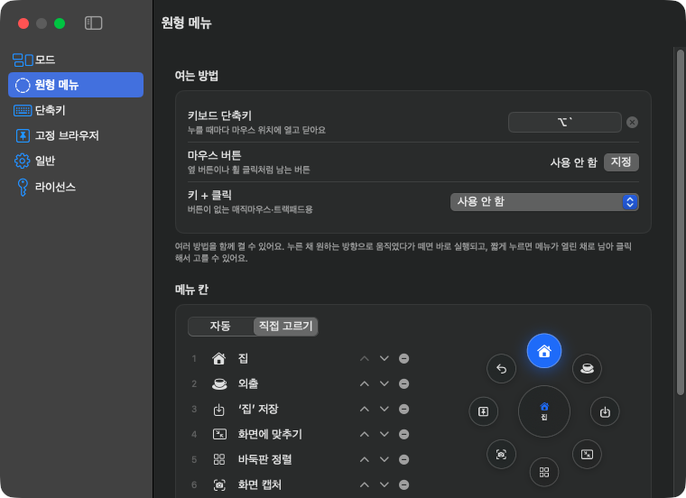

DESKMODE · MAC APP BETA집에서는 듀얼 모니터, 카페에서는 맥북 하나. DeskMode가 화면 구성을 알아보고, 창 배치를 그 자리에 맞게 알아서 바꿔 줘요.
macOS 14 이상 · Apple Silicon / Intel · 베타 기간 무료

모니터를 뺄 때마다 창이 한쪽으로 몰리고, 다시 꽂아도 제자리로 안 돌아오던 그 문제를 해결해요.
화면 구성마다 창 배치를 기억했다가, 모니터를 연결하거나 빼는 순간 맞는 배치로 바꿔요.
창을 옮기면 조용히 기억해요. Dock에 내려 둔 창과 숨긴 앱까지 그대로 돌려놔요.
⌥` 단축키, 마우스 옆 버튼, 키+클릭으로 어디서든 열어요. 칸에 넣을 기능은 직접 골라요.
왼쪽·오른쪽 절반, 화면 가득, 가운데로, 다음 화면으로. 창은 순간이동 대신 부드럽게 미끄러져요.
원하면 그 모드에서 쓰던 앱이 꺼져 있을 때 다시 열고 제자리에 놓아요.
다른 앱을 눌러도 숨지 않는 작은 브라우저, 원형 메뉴에서 바로 화면 캡처.
2–8칸까지, 모드와 창 정리, 지금 쓰는 창 옮기기 중에서 골라 순서까지 정할 수 있어요.

3분이면 끝나요.
다른 앱 창의 위치와 크기를 옮기려면 macOS의 이 권한이 꼭 필요해요. DeskMode는 창의 위치와 크기만 다루고, 화면 내용이나 키 입력은 읽지 않아요.
아니요. 창 배치와 설정은 내 맥(~/Library/Application Support/DeskMode)에만 저장되고, 어떤 서버로도 보내지 않아요.
네. 연결된 모니터 조합마다 따로 모드를 저장할 수 있어요. 맥북을 덮고 외부 모니터만 쓰는 경우도 따로 기억해요.
앱스토어 앱은 다른 앱의 창을 옮길 수 없게 막혀 있어서, 이렇게 직접 배포해요.
정식 출시 후에는 한 번 결제로 계속 쓰는 라이선스로 판매할 예정이에요. 베타 때 의견을 보내 주신 분께는 혜택을 드릴게요.